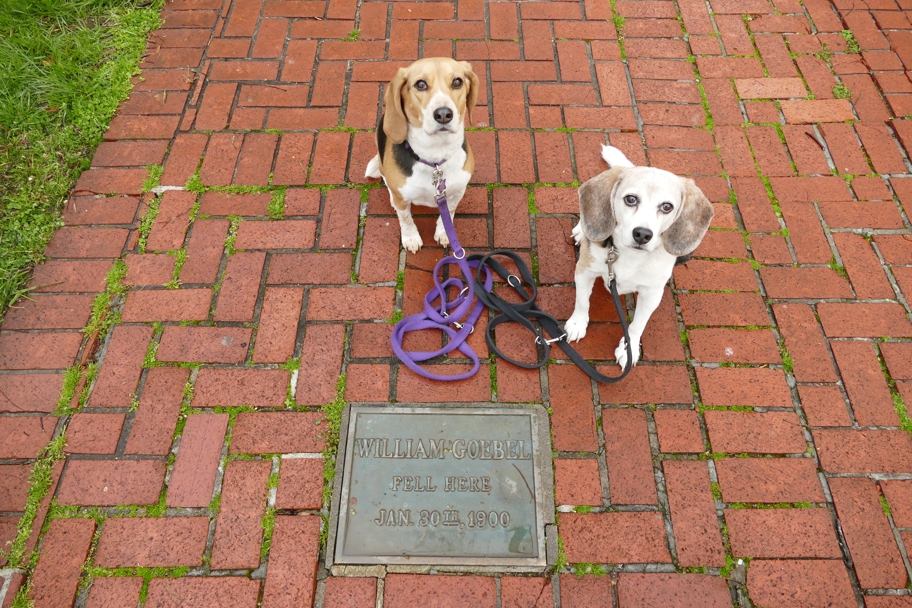

<--Previous Up Next-->

William Goebel was elected governor of Kentucky in 1899 in a rigged election, shot by an assassin on this spot in Frankfort, sworn in as governor the following day, and died four days later.
Frankfort Halley Beagle Kentucky Wallace Beagle